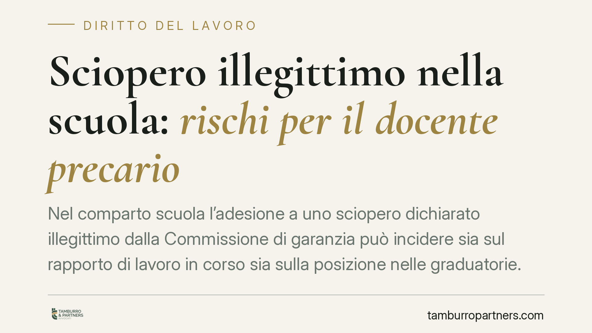

Sciopero illegittimo nella scuola: rischi per il docente precario
Nel comparto scuola l'adesione a uno sciopero dichiarato illegittimo dalla Commissione di garanzia può incidere sia sul rapporto di lavoro in corso sia sulla posizione nelle graduatorie. Il tema riguarda da vicino i docenti precari, per i quali gli effetti sul contratto a termine e sull'inserimento nelle GPS seguono presupposti distinti. Vediamo il quadro normativo e le cautele consigliate.

Il fatto
Il punto di partenza è una questione ricorrente nel pubblico impiego scolastico: cosa accade quando un docente aderisce a uno sciopero che la Commissione di garanzia ha dichiarato non conforme alle regole sui servizi pubblici essenziali.
Una pronuncia in questo senso è stata segnalata da fonti di informazione giuridica (sentenza indicata come Cass. n. 22927/2026). Precisazione doverosa: gli estremi non risultano a oggi verificabili nei repertori ufficiali e la datazione appare anomala. Trattiamo quindi la vicenda come spunto per illustrare princìpi generali, senza attribuire a una pronuncia specifica conclusioni che non siamo in grado di confermare.
Il problema giuridico, in ogni caso, è reale e ricorrente: l'astensione dal lavoro in uno sciopero poi giudicato illegittimo non è coperta dalla tutela costituzionale dello sciopero e può essere valutata come assenza non giustificata.
Inquadramento normativo
Il diritto di sciopero è garantito dall'art. 40 della Costituzione, ma non è illimitato. Nei servizi pubblici essenziali — tra cui l'istruzione — trova applicazione la Legge 12 giugno 1990, n. 146, che subordina l'astensione al rispetto di preavviso, durata, prestazioni indispensabili e procedure di raffreddamento.
La Commissione di garanzia per l'attuazione della legge sullo sciopero valuta la conformità delle astensioni a queste regole. Quando uno sciopero viene dichiarato illegittimo, l'adesione del lavoratore perde la copertura tipica del diritto di sciopero: l'assenza, non più protetta, può essere qualificata come ingiustificata e assumere rilievo disciplinare.
Occorre distinguere due piani che spesso vengono confusi.
Il primo riguarda il rapporto di lavoro in corso. Per il docente con contratto a tempo determinato non si parla, in senso tecnico, di "licenziamento per giusta causa" come nel rapporto a tempo indeterminato: si tratta più propriamente di un provvedimento disciplinare o di una risoluzione/recesso dal contratto a termine, con presupposti e proporzionalità da verificare caso per caso.
Il secondo piano riguarda la posizione nelle graduatorie provinciali per le supplenze (GPS), disciplinate dalle ordinanze ministeriali di settore (per il biennio di riferimento, l'O.M. n. 112/2022). Le ipotesi di depennamento previste da queste fonti — legate ad esempio alla rinuncia o all'abbandono del servizio — vanno lette con attenzione: la riconducibilità automatica di un'astensione illegittima a una causa di depennamento non è affatto scontata e richiede la verifica dello specifico presupposto applicato.
Perché la questione è rilevante
La rilevanza sta proprio nella distinzione tra i due piani. Depennamento dalle GPS e provvedimento sul contratto in essere non sono la stessa cosa e non discendono "automaticamente" l'uno dall'altro: seguono procedure, garanzie difensive e presupposti normativi differenti.
Parlare di "esclusione automatica" è quindi impreciso. Una condotta può avere riflessi su entrambi i fronti, ma ciascuno va valutato in base alla propria disciplina e nel rispetto del principio di proporzionalità.
Implicazioni pratiche
Per il docente precario il messaggio operativo è che l'adesione a uno sciopero non dichiarato legittimo espone a due tipi di conseguenze potenziali, da tenere distinte.
Sul rapporto in corso può aprirsi un procedimento disciplinare o incidere sulla prosecuzione della supplenza. Sulle graduatorie, l'amministrazione potrebbe prospettare un depennamento solo se ricorre una delle cause tassativamente previste dall'ordinanza applicabile.
In entrambi i casi, il lavoratore ha diritto alle garanzie procedimentali: contestazione preventiva, termine a difesa, motivazione del provvedimento.
Cosa fare in concreto
- Verifica la posizione della Commissione di garanzia sullo sciopero prima di aderire: controlla se l'astensione è stata segnalata come non conforme.
- Conserva ogni comunicazione sindacale e ministeriale relativa all'indizione dello sciopero.
- Esamina con attenzione l'eventuale contestazione disciplinare e rispetta i termini per presentare giustificazioni scritte.
- Distingui i provvedimenti: un atto sul contratto in corso non implica di per sé il depennamento dalle GPS, e viceversa.
- Verifica la base normativa esatta di ogni provvedimento di depennamento, individuando l'articolo dell'ordinanza richiamato.
Conclusione
L'astensione da uno sciopero illegittimo può avere conseguenze reali, ma non automatiche né indifferenziate. La correttezza formale e sostanziale di ciascun provvedimento va verificata singolarmente, sia sul rapporto di lavoro sia sulle graduatorie. In assenza di una pronuncia verificabile, questi princìpi restano il parametro di riferimento più solido.
---
Contributo informativo a cura di Tamburro & Partners - Avv. Giuseppe Tamburro. Non costituisce parere legale.
Ogni storia di lavoro ha i suoi tempi.
Se gestisci HR e vuoi un confronto su contenzioso, ispezioni o licenziamenti, scrivi allo studio. Ti rispondiamo entro un giorno lavorativo.